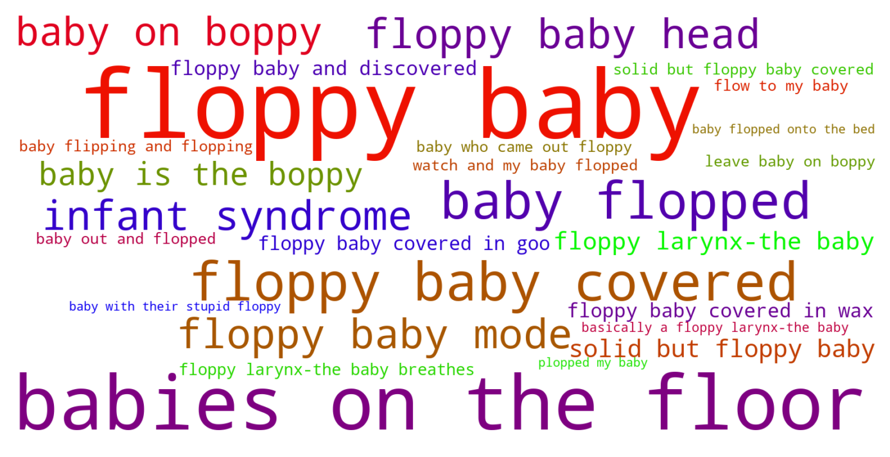
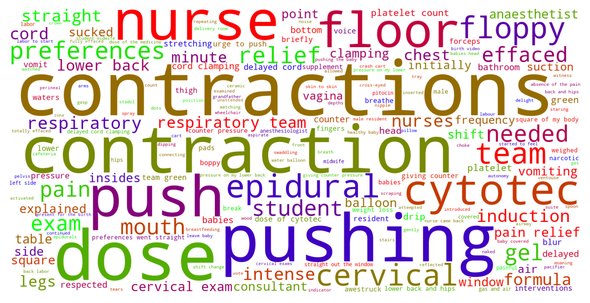

Jump to section:
Samples from Social CorpusHits per UMLS Alias on Social Corpus
Word Cloud Comparison
Embedding Space Comparison
Nearest Neighbors by Semantic Type
Related Analysed Concepts
Samples from Social Corpus
" But what if there are 10 babies on the floor of the Senate ?" he asked .
Confidence: 0.721. Reddit link
I went to an emergency section delivery last week of a 35 week baby who came out floppy and needed resuscitation and I got heavily involved and worked alongside Matt in the delivery room .
Confidence: 0.615. Reddit link
The nurses kept telling me that of all the mama to be and new babies on the floor , ours had the strongest and most consistent heartbeat and movements etc .
Confidence: 0.721. Reddit link
Ultrasound found that there was limited blood flow to my baby and that it could reverse .
Confidence: 0.609. Reddit link
- my fav and most useful items brought from home for baby is the boppy for ease of feedings , receiving blanket to cover him during skin to skin to stay warm , mittens because he has long finger nails and has been scratching his face , and a halo sleep sack making a quick and cozy swaddle .
Confidence: 0.763. Reddit link
MIL later suggested to leave baby on boppy pillow on kitchen table while I got stuff done once I was recovered .
Confidence: 0.603. Reddit link
I'm afraid to hold her , because it feels so unnatural to me to hold a baby with their stupid floppy delicate heads and it feels like the most awkward thing in the world to even try to hold her .
Confidence: 0.560. Reddit link
I let out the scream and my husband told the nurses that the last2 babies were out within 5 minutes of that scream.There were 2 nurses next to me both telling me to try not to push and urging me to lay on the bed because " you can't have a baby on the floor " I told them I had 2 babies on the floor and could not get up .
Confidence: 0.721. Reddit link
Then they plopped my baby girl on my chest and I was surprised .
Confidence: 0.545. Reddit link
Even if he was sound asleep ( floppy baby mode ) he'd wake up within minutes .
Confidence: 0.829. Reddit link
Hits per UMLS Alias on Social Corpus
-
floppy baby
31 hits
-
babies floppy
5 hits
-
floppy infant syndrome
1 hits
-
neonatal hypotonia
0 hits
-
hypotonia congenital
0 hits
-
infant floppy
0 hits
-
congenital hypotonia
0 hits
-
floppy infants
0 hits
-
hypotonia infantile
0 hits
-
floppy infant
0 hits
-
floppy infant syndrome disorder
0 hits
-
'floppy' infants
0 hits
-
infantile hypotonia
0 hits
-
congenital floppy infant
0 hits
Word Cloud Comparison
Keywords matching C0270971
Keywords matched against concept. Word size represents frequency.
Keywords co-occurring with C0270971
Co-occurrence is measured at the document-level (i.e. Reddit submissions). Frequencies are normalized to account for keywords common to all CUIs.
Embedding Space Comparison
T-SNE comparison for word embeddings learned from medical domain (EuroPMC) and social media (Reddit) independently.
Pearson correlation for union of closest 1000 neighbors: -0.222
Nearest Neighbors by Semantic Type
Most similar concepts in each of the selected UMLS semantic types. Based on concept embeddings from social corpus.
T047 (Disease or Syndrome)
-
C0270971
Floppy baby
1.000 Similarity
-
C0265808
Baby blue
0.699 Similarity
-
C0270276
Gray baby syndrome
0.665 Similarity
-
C0021296
Small baby
0.614 Similarity
-
C0265672
Straight back syndrome
0.598 Similarity
-
C0031556
Milk leg syndrome
0.598 Similarity
-
C0411024
Grunting baby
0.597 Similarity
-
C0024141
Sles
0.596 Similarity
T184 (Sign or Symptom)
-
C0857516
Floppy
0.811 Similarity
-
C0581297
Lump head
0.597 Similarity
-
C0232412
Hair not growing properly
0.571 Similarity
-
C0240194
Blue lip
0.568 Similarity
-
C0015468
Face pain
0.563 Similarity
-
C0332601
Faced moon
0.560 Similarity
-
C0231809
Dyspnea leaning over
0.553 Similarity
-
C1274926
Smarting skin
0.544 Similarity
T037 (Injury or Poisoning)
-
C0686721
Baby shaken
0.703 Similarity
-
C0561272
Cut head
0.561 Similarity
-
C0418406
Head butt
0.551 Similarity
-
C0417059
Fall into well
0.522 Similarity
-
C0337225
Fall into hole
0.506 Similarity
-
C0238437
Sting fish
0.494 Similarity
-
C0417069
Fall into pit
0.493 Similarity
-
C0018674
Head injury
0.491 Similarity
T200 (Clinical Drug)
-
C0718788
Baby oil top
0.654 Similarity
-
C0599396
Sleeping pills
0.449 Similarity
-
C3218395
Papain pill
0.445 Similarity
-
C0723917
Triple antibiotic ointment
0.386 Similarity
-
C3216620
Progesterone vaginal product
0.355 Similarity
-
C0978093
Lanolin cream
0.348 Similarity
-
C1163679
Injections sterile water
0.315 Similarity
-
C0982568
Multi vitamin inj
0.314 Similarity
T100 (Age Group)
-
C0021270
Baby
0.650 Similarity
-
C0021289
Newborn
0.636 Similarity
-
C4551581
Full term baby
0.626 Similarity
-
C3494262
Extremely preterm infant
0.575 Similarity
-
C4048294
Preterm baby
0.543 Similarity
-
C1708505
Infant toddler
0.505 Similarity
-
C0870221
Boy
0.451 Similarity
-
C0814589
Toddler stage
0.410 Similarity
T061 (Therapeutic or Preventive Procedure)
-
C2315054
Putting baby breast
0.635 Similarity
-
C2317425
Bathing infant
0.603 Similarity
-
C0545508
Pulse taking other
0.575 Similarity
-
C0198069
Setback ear
0.546 Similarity
-
C0749734
Tuck tummy
0.537 Similarity
-
C0204791
Care newborn nursing
0.534 Similarity
-
C0027617
Newborn screening
0.525 Similarity
-
C0186045
Lumbar spine fusion
0.519 Similarity
T019 (Congenital Abnormality)
-
C0265529
Plagiocephaly
0.629 Similarity
-
C0013336
Runting
0.575 Similarity
-
C0265715
Heart shaped pelvis
0.570 Similarity
-
C0016842
Chest funnel
0.566 Similarity
-
C0432355
Small nipples
0.562 Similarity
-
C0003492
Coarctation
0.543 Similarity
-
C0000768
Birth defect
0.542 Similarity
-
C0266449
Brain malformation
0.535 Similarity
T023 (Body Part, Organ, or Organ Component)
-
C0007776
Grey matter
0.625 Similarity
-
C0205029
Head skin
0.624 Similarity
-
C0545515
Arms hands skin
0.576 Similarity
-
C0222806
Head rib
0.572 Similarity
-
C0020164
Bone arm
0.561 Similarity
-
C0440991
Wrap around toe flap
0.559 Similarity
-
C0013303
Duodenum
0.559 Similarity
-
C0222149
Chest skin
0.555 Similarity
T074 (Medical Device)
-
C0179275
Infant bed
0.606 Similarity
-
C0183347
Arm sling
0.592 Similarity
-
C3878817
Bib infant child
0.589 Similarity
-
C3879333
Infant sleep positioner
0.578 Similarity
-
C3179499
Sling male
0.566 Similarity
-
C0008034
Chest tube
0.535 Similarity
-
C3878897
Reclining chair
0.534 Similarity
-
C0181130
Headrest
0.534 Similarity
T190 (Anatomical Abnormality)
-
C4476527
Flat head
0.599 Similarity
-
C0016202
Fallen arch
0.575 Similarity
-
C0399453
Flabby alveolar ridge
0.530 Similarity
-
C0269269
Inverted nipples
0.530 Similarity
-
C4025319
Head stopped growing
0.526 Similarity
-
C0266785
Umbilical cord issue
0.523 Similarity
-
C0332482
Distortion
0.509 Similarity
-
C4476975
T shaped uterus
0.507 Similarity
T046 (Pathologic Function)
-
C0021308
Infarct
0.583 Similarity
-
C0549631
Newborn distress
0.579 Similarity
-
C0566742
Cord tightly around neck
0.548 Similarity
-
C0162834
Hyperpigmentation
0.532 Similarity
-
C0341968
Snapped cord
0.526 Similarity
-
C0566748
Cord problem umbilical
0.520 Similarity
-
C3686529
Died while hatching
0.516 Similarity
-
C0036974
Shocked
0.499 Similarity
T060 (Diagnostic Procedure)
-
C0202691
Cat scan head
0.568 Similarity
-
C1293898
Head up
0.566 Similarity
-
C2599434
Newborn hearing screen
0.556 Similarity
-
C0430746
Spine testing
0.527 Similarity
-
C2348813
Tus
0.526 Similarity
-
C0037296
Skin test
0.503 Similarity
-
C1449832
Nuchal translucency measurement
0.499 Similarity
-
C0039985
Chest x ray
0.496 Similarity
T044 (Molecular Function)
-
C0887940
Gene arrangements
0.561 Similarity
-
C1752422
Wing hair outgrowth
0.518 Similarity
-
C1749457
Ligands activity
0.473 Similarity
-
C1149397
Heartless ligand
0.472 Similarity
-
C1148613
Binding iron
0.454 Similarity
-
C2247516
Sgah
0.426 Similarity
-
C1150342
Dopachrome rearranging enzyme
0.414 Similarity
-
C0369768
Oxygen saturation
0.394 Similarity
T079 (Temporal Concept)
-
C3540000
Newborn age hours
0.554 Similarity
-
C0231330
Infancy
0.521 Similarity
-
C0541528
Newborn states
0.519 Similarity
-
C2911686
First feeding
0.489 Similarity
-
C2736803
One hour after resting
0.457 Similarity
-
C0439223
Millisecond
0.457 Similarity
-
C0443252
Long term
0.455 Similarity
-
C0449396
At crowning head
0.454 Similarity
T007 (Bacterium)
-
C1015849
Wigglesworthia
0.547 Similarity
-
C0995648
Genus quinella
0.487 Similarity
-
C1016530
Hallella
0.430 Similarity
-
C0579233
Group b strep
0.412 Similarity
-
C0022828
L forms
0.409 Similarity
-
C0597134
Flora oral
0.395 Similarity
-
C0995705
Frankia
0.382 Similarity
-
C0018154
Gram positive bacteria
0.376 Similarity
T039 (Physiologic Function)
-
C0858972
Baby sleep
0.544 Similarity
-
C0232008
Airflow reverse
0.529 Similarity
-
C2584297
Seated position
0.516 Similarity
-
C0442695
Bearing down
0.502 Similarity
-
C0231999
Airflow
0.477 Similarity
-
C2350291
Gating startle
0.448 Similarity
-
C0234451
S sleep
0.447 Similarity
-
C0205714
Development infant
0.445 Similarity
T067 (Phenomenon or Process)
-
C0337240
Fall while being carried
0.531 Similarity
-
C0375737
Fall from toilet
0.469 Similarity
-
C0456453
Tone pip
0.466 Similarity
-
C0458142
Laser light
0.457 Similarity
-
C0337226
Fall home
0.444 Similarity
-
C2986841
Binding potential
0.419 Similarity
-
C0870861
Grow up
0.415 Similarity
-
C0023983
Long term effects
0.413 Similarity
T048 (Mental or Behavioral Dysfunction)
-
C0009676
Confused
0.525 Similarity
-
C0040953
Hair pull
0.501 Similarity
-
C1997039
Found hanging self
0.498 Similarity
-
C0393760
Trouble falling asleep
0.495 Similarity
-
C0018672
Banging head
0.494 Similarity
-
C0010598
Affective personality
0.492 Similarity
-
C0003537
Losing words
0.473 Similarity
-
C0023186
Learning differences
0.465 Similarity
T032 (Organism Attribute)
-
C0574765
Gray hair
0.518 Similarity
-
C0575118
Normal posture
0.505 Similarity
-
C0005901
Body size
0.504 Similarity
-
C0005612
Weight baby
0.500 Similarity
-
C0871976
Facial features
0.483 Similarity
-
C0005902
Body surface area
0.481 Similarity
-
C0751992
Fetal weight
0.480 Similarity
-
C1274637
Light brown hair
0.465 Similarity
T042 (Organ or Tissue Function)
-
C0037271
Aged skin
0.513 Similarity
-
C0037290
Skin tone
0.511 Similarity
-
C0333129
Head white
0.488 Similarity
-
C0026132
Milk let down
0.485 Similarity
-
C0032058
Placentation
0.458 Similarity
-
C0042396
Vasospasm
0.449 Similarity
-
C0231452
Flexed
0.449 Similarity
-
C0031924
Goose bumps
0.440 Similarity
T049 (Cell or Molecular Dysfunction)
-
C0544885
Stop gain
0.503 Similarity
-
C1705285
Mutated
0.489 Similarity
-
C0021943
Inversion
0.468 Similarity
-
C4725191
Stop lost
0.465 Similarity
-
C0008625
Chromosomal abnormality
0.445 Similarity
-
C0008628
Del
0.435 Similarity
-
C0040715
Translocation
0.424 Similarity
-
C0041107
Trisomy
0.420 Similarity
T031 (Body Substance)
-
C1253943
Fluid chest
0.503 Similarity
-
C0007806
Spinal fluid
0.494 Similarity
-
C0162371
Cord blood
0.482 Similarity
-
C0227258
Chyme
0.480 Similarity
-
C0042541
Vernix
0.464 Similarity
-
C0026140
Breasts milk
0.461 Similarity
-
C2983684
All tissues
0.442 Similarity
-
C1549095
Brain cyst fluid
0.436 Similarity
T201 (Clinical Attribute)
-
C1286083
Form breast
0.503 Similarity
-
C1286038
Position pregnancy
0.500 Similarity
-
C0429622
Oxygen supply
0.497 Similarity
-
C1286272
Form bone
0.493 Similarity
-
C0035234
Breathing sound
0.484 Similarity
-
C0080078
Mobility
0.478 Similarity
-
C1997846
Heart rate recovery time
0.473 Similarity
-
C1286057
Completeness placenta
0.462 Similarity
T054 (Social Behavior)
-
C0030209
Bonds pair
0.501 Similarity
-
C4505276
Body pushing
0.474 Similarity
-
C0683557
Acting as sounding board
0.459 Similarity
-
C0679426
Incompatibility
0.458 Similarity
-
C0233908
Group sex play
0.455 Similarity
-
C2936696
Group thinking
0.434 Similarity
-
C0260023
Mother child
0.426 Similarity
-
C0814557
Attachment parenting
0.424 Similarity
T059 (Laboratory Procedure)
-
C0026040
Sectionings thin
0.498 Similarity
-
C3541925
Head us
0.488 Similarity
-
C3830389
Drying other
0.470 Similarity
-
C0430065
Standard pregnancy test
0.455 Similarity
-
C1315011
Challenge test
0.452 Similarity
-
C1278297
Sweat weight
0.448 Similarity
-
C0430179
Sweat test
0.445 Similarity
-
C0023901
Liver tests
0.444 Similarity
T101 (Patient or Disabled Group)
-
C0233363
Monoamniotic twins
0.490 Similarity
-
C0002695
Amputee
0.475 Similarity
-
C4727511
Women who have mastectomy
0.465 Similarity
-
C0205785
Physically challenged
0.411 Similarity
-
C0683995
Drug exposed child
0.401 Similarity
-
C0682161
Dually diagnosed
0.397 Similarity
-
C0520954
Fast learner
0.390 Similarity
-
C0525065
Blind person
0.388 Similarity
T018 (Embryonic Structure)
-
C0553522
Cord placenta umbilical
0.480 Similarity
-
C0440731
Fetal brain
0.470 Similarity
-
C0041633
Umbilical cord
0.449 Similarity
-
C0041637
Umbilical vein
0.446 Similarity
-
C0041632
Umbilical artery
0.444 Similarity
-
C0008508
Chorionic villi
0.438 Similarity
-
C0231024
Neural tube
0.426 Similarity
-
C0015965
Fetal
0.423 Similarity
T041 (Mental Process)
-
C0005891
Body image
0.476 Similarity
-
C0001762
After image finding
0.466 Similarity
-
C0034763
Testing reality
0.464 Similarity
-
C0037322
Dream sleep
0.457 Similarity
-
C0009647
Conditioned
0.453 Similarity
-
C3146231
Secure feeling
0.446 Similarity
-
C0043012
Vigilant
0.432 Similarity
-
C0424157
Fear going crazy
0.430 Similarity
T195 (Antibiotic)
-
C0310367
Today
0.448 Similarity
-
C0723285
Septa
0.410 Similarity
-
C1564058
Roxi basics
0.404 Similarity
-
C0701901
Baypen
0.398 Similarity
-
C0013090
Doxycycline
0.319 Similarity
-
C0279516
Antibacterial
0.318 Similarity
-
C0878118
Geopen
0.298 Similarity
-
C0003232
Antibiotics
0.292 Similarity
T005 (Virus)
-
C3743464
Mycobacteriophage whirlwind
0.438 Similarity
-
C3768023
Mycobacteriophage conspiracy
0.422 Similarity
-
C5116712
Bjornvirus
0.420 Similarity
-
C1220459
Hart park group
0.409 Similarity
-
C4415400
Phage wrath
0.402 Similarity
-
C4433204
King virus
0.387 Similarity
-
C1024667
Gadgets gully virus
0.370 Similarity
-
C3949524
Mischivirus
0.357 Similarity
T034 (Laboratory or Test Result)
-
C0240802
Positive pregnancy test
0.430 Similarity
-
C0743295
Drug positive screen
0.429 Similarity
-
C0282578
Dna footprints
0.425 Similarity
-
C3532201
Chromosome microdeletion
0.424 Similarity
-
C3898879
Triple positive
0.422 Similarity
-
C0427777
Pregnancy results tests
0.411 Similarity
-
C0851020
Results test urine
0.409 Similarity
-
C0428962
Poor ecg quality
0.403 Similarity